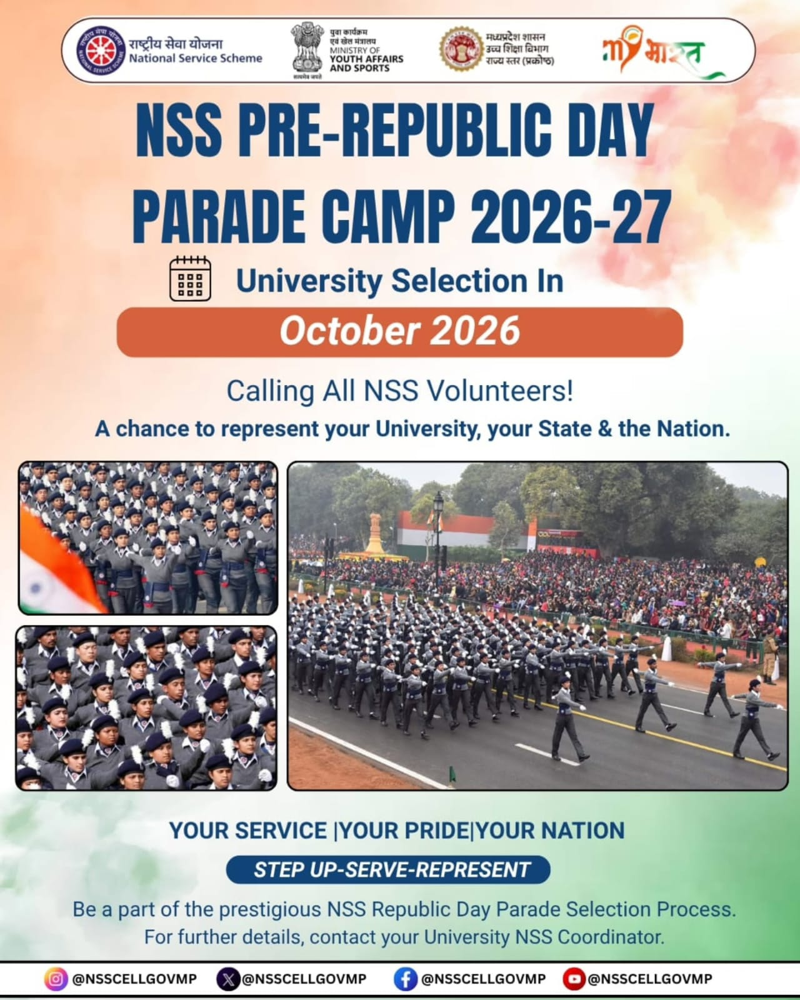

NSS PRE-RDC CAMP · 2026–27
Step up.
Serve. Represent.
University selection for the NSS Pre-Republic Day Parade Camp is scheduled for October 2026. Volunteer to represent SLIET, Punjab and India.
View opportunity ↗